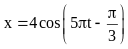
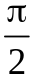
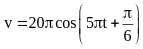
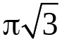
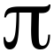
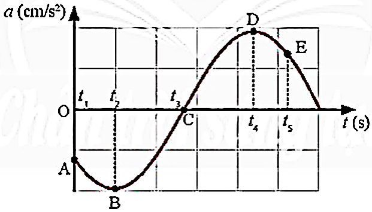
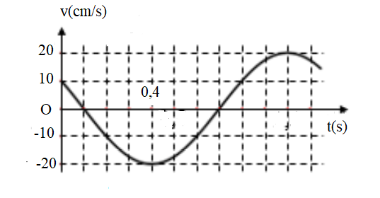

PHẦN II. Câu trắc nghiệm đúng sai
Trong mỗi ý a), b), c), d) chọn Đúng hoặc Sai. Đúng 1 ý: 0,1 · 2 ý: 0,25 · 3 ý: 0,5 · 4 ý: 1,0 điểm.
1
Một vật dao động điều hòa có phương trình li độ  .
.
.a) Chiều dài quỹ đạo dao động của vật là 10 cm.
b) Tốc độ dao động cực đại của vật là 10 cm/s.
c) Lúc t = 2 s thì gia tốc có giá trị $a = -20\pi^{2}$ cm/s$^2$.
d) Quãng đường vật đi được sau thời gian 2 chu kì là s = 20 cm.
2
Một vật dao động điều hòa có phương trình là

(cm).a) Vận tốc biến thiên điều hoà theo thời gian sớm pha

rad so với li độ.b) Phương trình vận tốc của vật là

(cm/s).c) Tại thời điểm t = 2 s vật có tốc độ 10

cm/s và chuyển động theo chiều âm.d) Vật có li độ 2 cm khi tốc độ của vật là 5

(cm/s).3
Một vật dao động điều hòa có đồ thị gia tốc theo thời gian như hình bên. Xác định vị trí, vận tốc và gia tốc của vật tại các thời điểm $t_1, t_2, t_3, t_4$ và $t_5$ ứng với các điểm A, B, C, D, E trên đường đồ thị.

a) Vị trí A vật có gia tốc âm
b) Vị trí B và D vật có vận tốc bằng 0
c) Vị trí C vật đi qua vị trí cân bằng theo chiều dương
d) Vị trí E vật có li độ dương
4
Một vật dao động điều hòa
a) Biên độ và tần số là những đại lượng có giá trị thay đổi.
b) Vận tốc của vật luôn có giá trị dương.
c) Vận tốc của một chất điểm dao động điều hòa biến thiên cùng tần số và trễ pha $\frac{\pi}{2}$ so với gia tốc.
d) Gia tốc của một chất điểm dao động điều hòa biến thiên cùng tần số và ngược pha với li độ.
5
Một vật có khối lượng m = 0,1 kg dao động điều hòa theo phương trình $x=A\cos\left(\omega t+\varphi\right)$. Hình bên là đồ thị biểu diễn sự phụ thuộc của vận tốc v của vật theo thời gian t.

a) Tại thời điểm ban đầu (t = 0) vật đi qua vị trí cân bằng.
b) Ở thời điểm t = 0,1 s, vật có vận tốc bằng không.
c) Chu kì dao động của vật là T = 0,6 s.
d) Cơ năng của vật là $2.10^{-3}$ J.
6
Một vật có khối lượng 100 g dao động theo phương trình $x = 4\cos(3\pi t + 0,5\pi)$ (cm).
a) Chiều dài quỹ đạo dao động của vật là 8 cm.
b) Độ lớn vận tốc cực đại của vật là $12\pi$ m/s.
c) Lấy $\pi^2 = 10$. Độ lớn gia tốc cực đại của vật là $360$ (cm/s$^2$).
d) Lấy $\pi^2 = 10$. Độ lớn lực kéo về cực đại tác dụng lên vật là 0,36 N.
7
Một vật dao động điều hòa với biên độ 4 cm và tốc độ cực đại là $8\pi$ cm/s.
a) Vật dao động điều hòa theo quỹ đạo hình sin.
b) Tần số góc của vật là $2\pi$ rad/s.
c) Chu kì dao động của vật là 1 Hz.
d) Gia tốc cực đại của vật là $16\pi^2$ cm/s$^2$.
8
Một vật có khối lượng 200 g dao động điều hòa với phương trình của vận tốc là $v = 20\cos(5t+0,5\pi)$ (cm/s).
a) Tốc độ cực đại của vật là 5 cm/s.
b) Biên độ dao động của vật là 20 cm.
c) Gia tốc cực đại của vật là 100 cm/s$^2$.
d) Lực kéo về cực đại tác dụng lên vật dao động là 0,2 N.